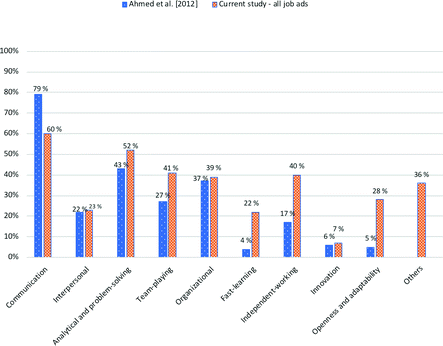
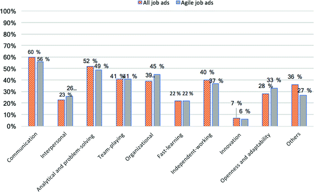

1 Introduction
Software testing is a complex activity that implies mastering both technical and soft skills. To be a productive software tester, one needs to understand business requirements from customers and to communicate them to the developers. Testers need to be organized, efficient and able to prioritize their work. Furthermore, they have to bear the pressure of finishing their job as soon as possible, so that the product can be released [1]. It is essential that they learn fast and master many kinds of responsibilities [2]. Testers need to be especially flexible because they face stress [3] and changes [4] throughout the development process.
It may also be that testers need soft skills additional to the ones required for developers or managers [5, 6]. Because of the nature of their job combining different domains and perspectives, it may be that user focus [7] and critical thinking [8] have to be traits of efficient software testers. Moreover, the user-centered design and agile development are already common practices in companies, and the results look promising. But there are hinders to these practices such as communication breakdowns or the lack of acknowledgement of user involvement [9], issues deeply connected to soft skills.
Rivera-Ibarra et al. [10] found that the quality and innovation of software products strongly depends on the knowledge, abilities, and talent of all the people developing software. Technical and hard skills have been a long-time focus point for research in the software development field [11]. Soft skills, human factors, and intrinsic motivation have recently begun to gain attention, but with a focus on the software developer role [12]. However, the role of software tester has not been given the same attention. It can constitute a drawback since building software is a teamwork and essentially a human activity [13] shaped by the human skills of all contributors into bringing software to live. Systematic literature reviews in software testing show relevant testing areas or methods of testing [14], but we did not find information about the soft skills in the testing world. Other research has looked at soft skills depending on various phases of development, from requirements engineering to design, implementation and testing [15]. But this approach does not look at testing as an on-going activity, involved in all phases of developing software [16]. Nor does it comprise the role of tester as a sum of all these activities [17].
Soft skills are defined by Lippman et al. [18] as: “The competencies, behaviors, attitudes, and personal qualities that enable people to effectively navigate their environment, work well with others, perform well, and achieve their goals.” It refers to a combination of people skills, social skills, character traits and attitudes and complement other skills such as technical and academic skills [18]. We wanted to investigate: what do companies look for in software testers? What are the soft skills they ask for? How do these needs evolve? What is specifically required of agile testers? In this study, we aim to answer the following research questions:
- RQ1: What is the trend for soft skills requirements for testers?
- RQ2: Are there specific soft-skill requirements for testers in agile projects?
To answer the first research question, we use a categorization of soft skills proposed in a study by Ahmed et al. [19], where the authors analyzed 500 job advertisements in IT positions (developers, designers, system analysts and software testers). By comparing with the result of the analysis specifically for software testers from 2012 [19], we were able to look at the skills requirement trend in the last 5 years. Moreover, to answer the second research questions, we analyze specifically the ads mentioning agile methods. Additionally, we make a preliminary analysis of job advertisements not asking for any soft skills.
This paper is structured as follows: Sect. 2 discusses the way we have collected and analyzed data. Section 3 presents the results of our findings. We discuss and interpret the results in Sect. 4 and present the limitations of our study in Sect. 5. In Sect. 6 we present implications and in Sect. 7 we draw the conclusion and discuss future work.
2 Data Collection and Analysis
We collected job advertisements from 33 countries on five continents. The majority of the ads were collected from the USA, Canada and Norway, see Table 1 for the details. We chose to use online job-search engines to collect the raw job advertisements. We decided to use such tools instead of going to specific hiring companies because we consider the search engines to be an efficient way of including in our analysis a large number of hiring companies, a great diversity of companies and large visibility to job-seekers. We investigated which were the most significant job-search engines by two dimensions: the number of users and the number of jobs posted. According to commercial web traffic data and analytics services provided by Alexa(Amazon)1 and SymilarWeb2, we chose the five most popular job-search engines, namely Indeed.com, Monster.com, GlassDoor.com, CareerBuilder.com, and SimplyHired.com.
Table 1.
Job advertisements collected from each country
Country | No. of ads | % of the total ads |
|---|---|---|
USA | 96 | 24,0% |
Canada | 65 | 16,3% |
Norway | 22 | 5,5% |
UK | 20 | 5,0% |
Argentina | 17 | 4,3% |
France | 17 | 4,3% |
Mexico | 15 | 3,8% |
South Africa | 14 | 3,5% |
China | 14 | 3,5% |
Vietnam | 13 | 3,3% |
Greece | 13 | 3,3% |
India | 12 | 3,0% |
Sweden | 10 | 2,5% |
Portugal | 10 | 2,5% |
Australia | 10 | 2,5% |
Spain | 9 | 2,3% |
Italy | 8 | 2,0% |
Germany | 8 | 2,0% |
Other countries | 27 | 6,8% |
400
|
100,0%
|
To obtain a 95% confidence level with a confidence interval of ±5% we needed a minimum of 384 job ads [20]. We thus decided to study 400 job ads. We only selected the jobs that referred to the role of software testers. We have included therefore jobs such as testers, QAs, technical testers, usability testers, performance testers, game testers and financial-system testers. We have not considered jobs referring to other roles within a software development team, such as developers, architects, technical writers, or UX designers.
We collected job ads posted in multiple national languages because we consider it to be relevant to include countries that are important actors in the software development industry, whose language is not English. We gathered job ads posted in 20 different languages. We collected 226 job ads that were posted directly in English and 174 job ads that we translated into English. To make sure we translated the advertisements correctly, we used two independent online translation tools from Google3 and DeepL Translator4, respectively Etranslator5, to translate and to cross-check the coherence of the translations. We included only the job ads where the results of translations were the same. Using in parallel translation tools and comparing the results worked well because most of the job advertisements were posted in plain language, using standard terms. However, we still triple-checked with a fluent software professional or native speaker the translations to English from French, Italian, Spanish, German, Hindi, Vietnamese and all Scandinavian languages and the translation results provided by the tools were confirmed.
As a last point, it is worth mentioning that the job advertisements were collected from both in-house software developers, as well as consultancy companies. Both the public sector and private sectors were represented. For example, Amazon, Norges Bank, Expedia, Nasdaq, Texas Instruments, Verizon, Motorola Solutions, Fujitsu, VISA, IBM, Nokia, New South Wales Government, National Bank of Canada, Accenture, Sogeti and Sopra Steria.
2.1 Coding of Soft Skills
In this paper, we examine which categories of soft skills are in most demand from employers. We determine which categories of soft skills are most popular for tester roles, compare them with the existing studies and interpret the findings.
We chose to manually analyze the data because the ads have different structures: some of the job-search engines allow job advertisers to post in their specific format, but also various job-search engines use different formats for job ads. Last but not least, not all advertisers have the same understanding of the information that has to be filled-in an ad. Therefore, we found soft skills in the sections dedicated to requirements, job attributes, duties. We went manually through each of the job ads and looked for soft skills requirements. We copied the content of the ads into the following categories:
- Country
- Job title
- Job description
- Responsibilities and tasks
- Job requirements
- Education needed
- Other certification needed
- Minimum prior experience required
- Nice to have
To map the soft skills, we used the categories defined in an earlier study of job advertisements in software development [19], as our coding scheme, see Table 2. Moreover, we added the tenth category: “Other soft skills”, where we coded soft skills that did not fit any of the other categories, for example, “good sense of humor”, “multitasking”, “ability to work under pressure” and “customer focus”. We considered both the soft skills that were required imperatively (mandatory requirements) and the soft skills that were considered a plus for getting hired (nice to have). We did not distinguish between different strengths of the same skills. For instance, “strong communication skills” and “excellent communication skills”.
Table 2.
Definition of the soft skills categories
Skill category | Definition based on [19] |
|---|---|
Communication skills | The ability to convey information so that it is well received and understood |
Interpersonal skills | The ability to deal with other people through social communication and interactions |
Analytical and problem-solving skills | The ability to understand, articulate and solve complex problems and make sensible decisions based on available information |
Team player | The ability to work effectively in a team environment and contribute toward the desired goal |
Organizational skills | The ability to efficiently manage various tasks and to remain on schedule without wasting resources |
Fast learner | The ability to learn new concepts, methodologies, and technologies in a comparatively short timeframe |
Ability to work independently | The ability to carry out tasks with minimal supervision |
Innovative | The ability to come up with new and creative solutions |
Open and adaptable to changes | The ability to accept and adapt to changes when carrying out a task without showing resistance |
Others | Soft skills that do not fit any of the above categories |
3 Results
Of the 400 ads, 257 ask for soft skills (64,2%). We identified in all ads a total of 1.218 of soft skills, which leads us to an average of 4,73 soft skills per advertisement that demands soft skills. In comparison, the same ads ask for an average of 11,3 testing skills, 5,27 technical skills, and 0,7 domain-specific skills. Table 3 shows examples of soft skills requirements asked for in the ads.
Table 3.
Examples of categorized soft skills
Category name | Extracts |
|---|---|
Communication skills | “Excellent communication skills with team members and business contacts” |
Interpersonal skills | “Is able to interact with system developers, business analysts and others” |
Analytical and problem-solving skills | “Demonstrated ability to analyze and solve technical issues” |
Team player | “Values teamwork” |
Organizational skills | “You must be well-organized with the ability to work to deadlines” |
Fast learner | “A passion for learning and testing” |
Ability to work independently | “Must be able to work with minimal or no supervision on extra-large and multiple concurrent projects and coordinate the work of others in this environment” |
Innovative | “An ability to think creatively” |
Open and adaptable to changes | “Ability to work in a rapidly changing environment” |
Others | “Customer-service orientation” |
In order to analyse the trend, we use [19] as a proxy for the skills demands in 2012. Figure 1 shows the results of comparing the soft skills demands in [19] and all the ads in our study. Focusing on the ranking, in both studies the most important category of skills is communication. Second, comes analytical and problem-solving skills. We see similar results for four types of skills: interpersonal, analytical and problem-solving, organizational and innovation: in [19] and in our research, they are demanded in approximatively the same measure. However, the demand for communication skills has decreased by 19%. The need for team-playing skills have increased by 14%, fast-learning skills have increased by 18%, independent-working skills by 23% and openness and adaptability skills have increased by a spectacular 25%.

Fig. 1.
Comparative analysis of soft skills requirements
The category named “Others” contains 121 ads and 161 skills that did not fit into the predefined categories in [19], see Table 4. When we analyzed these skills, we found that the first and most important was having work ethics. Here we included skills such as integrity, trustworthiness, ethical behavior, honesty, respectability, credibility. The other large categories of other skills were customer focus, proactivity and responsibility.
Table 4.
Analysis of the “Others” soft skills category, all job ads
Other skills | No | % | Definition | Example |
|---|---|---|---|---|
Work ethic | 24 | 9% | One that demonstrates professionalism in their work. A person that one can trust and work results that one can rely on |
“Perform all work with the highest industry and ethical standards”
|
Customer focus | 20 | 7% | The ability to understand and to act towards serving the clients’ needs | “Customer-service orientation” |
Proactive | 19 | 7% | The ability to identify work to be done and start doing it, rather than just respond to management’s requirements to complete work tasks | “Pro-activeness, accountability and results orientation” |
Responsible | 12 | 4% | The ability to be trusted; delivering valid, definitive and well-grounded work results |
“Ownership and responsibility of work”
|
Works under pressure | 12 | 4% | The ability to perform job duties under the mental distress of multiple matters requiring immediate attention | “Ability to multi-task under tight deadlines and report status” |
Critical-thinking | 8 | 3% | The ability to understand information in order to identify, construct and evaluate arguments |
“Critical thinking: use logic and reasoning to identify strengths and weaknesses of alternative solutions”
|
Motivated | 8 | 3% | One that has a reason for doing something | “Thrive in self-motivated innovation-driven environments” |
Detail-oriented | 6 | 2% | One that pays attention to details and makes a conscious effort to understand causes instead of just effects | “Detail-oriented and analytical individual” |
Quality-oriented | 6 | 2% | One that understands the product’s ability to satisfy the customers’ needs |
“With a focus on improving development team productivity and enhancing product quality.”
|
Committed | 6 | 2% | The ability to give time and energy to something one believes in | “The successful candidate will be a self-motivated and committed individual” |
121
|
36%
|
Out of the 400 analyzed jobs, 120 specify that the role is for an agile working environment. That is, there is mentioned “agile, Scrum, Kanban or Lean” in the advertisement. To see if there were particular requirements for agile software testers, we analyzed the 120 ads in more detail. We found that 91 ads ask for a total of 429 soft skills, which leads to an average of 4,71 soft skills per job ad. There are 64,2% of all ads asking soft skills and 75.8% agile ads asking for soft skills. The average number of skills is, however, similar. Referring to the “Others” category, most ads ask for work ethics (8%), customer focus (7%) and be proactive (5%).
The analysis shows that 257 ads out of 400 are asking for soft skills. The percentage is good (64,2%), in the sense that more than half of the job advertisers recognize the need for soft skills from their testers and verbalize the need in their job advertisements. However, 144 job ads do not ask for soft skills. Job ads coming from Canada and the USA ask in the biggest proportion of soft skills: Canada with 80% and the USA with 74%. China, Vietnam and Portugal have a moderate number of job ads not asking for soft skills (around 30% each). The rest of the studied countries have less than half of their ads mentioning soft skills.

Fig. 2.
Soft skills particularities for agile testers
4 Discussion
Our findings show that while more than half of the advertisers ask for soft skills, the percentage is smaller than the ones asking for testing skills or technical skills. Therefore, even though the human factors contribute the most to the success of software projects [21], the demand for soft skills still lags significantly behind the demand for testing and technical skills. The results are however is in line with the findings in [22], which underlines this paradox when hiring in the software industry.
To answer our first research question: What is the trend for soft skills requirements for testers? we compared the result of our analysis with a similar study from 2012 [19]. In the set of findings [19], by analysing the trends in requirements for soft skills, we observe that there is a stronger need for team-playing skills, fast-learning skills, independent-work skills and openness and adaptability skills. Agile software development puts an emphasis on teamwork having a central role in software development, therefore, being a team-player is essential. There is little literature on fast-learning skills. However, we can assume that, given the rapidly changing tasks and requirements, testers have to learn fast concepts, tools or even whole new domains, such as accounting or statistics to perform their work.
We know that independent-working skills are directly related to how much activity is required of the learner. If one can work independently, then the burden of supervision, control, and feedback for the individual learner or the team is decreased [23]. Therefore, independent-learning is a desirable skill, in order to decrease the burden on the team.
Both openness and adaptability are traits that need to be fostered within development teams, and the explanation is it makes it easier for team members to admit their own mistakes, to negotiate, listen and facilitate [6]. Therefore, it is explainable that the request for these skills has increased, as a consequence of the desire of software companies to go overpass mistakes sooner and with fewer consequences.
It is unclear why the demand for communication skills has such a significant fall. Even the agile manifesto makes communication a central part of software development. Therefore, an explanation for a down-trend in the demand for communication is that has become such a common trait that the job advertisers do not specifically mention it.
Concerning new categories of skills required of testers, the most important is work ethics. Job advertisers specifically ask for integrity and trustworthiness, in both relations with customers and team members. They ask for a work done with professionalism first and foremost. Customer focus is a close second. There are specific requirements for testers to test through the customers’ perspective and to keep into account customers’ needs. An interpretation of the agile manifesto [24] sets the customer as an integral part of the development team; therefore more customer-focus is not surprising. Testers are specifically asked to be proactive, in the sense of picking-up and fulfilling job tasks, rather than wait and be told what to do. It can be a sign that there is a tendency in the software development to move away from micro-management to autonomous teams [25].
Job advertisers seem to exhibit a trend now in asking for responsibility-related skills; they emphasize the candidate to be able to deliver definitive work and well-grounded work results. We can translate this requirement by that work half-done is not accepted. One has to finish their job, and one has to prove that their work results are correct. Other notable new demands are the ability to work under pressure, the ability of critical-thinking, be motivated, committed, detail-oriented and quality-oriented. We consider it to be a positive signal the small number of requests for multitasking (4%), as this practice, especially inter-projects, is often associated with a loss of effectiveness [26].
Our second research question was “Are there specific soft-skill requirements for testers in agile projects?”. Only 30% of the companies mentioned agile in the advertisement. Since a recent study found that at least 70% of developers work in agile projects [27], we would expect the number of agile testing ads to be higher. One explanation for the low number is that nowadays so many projects work with agile methods, that employers do not specify it anymore in the job ads.
The agile ads are slightly more oriented towards interpersonal skills, organizational skills and openness and adaptability skills. It is explicable from the perspective of agile development, where the focus is on people talking to each other, self-organizing teams and facing changes at a faster pace. Regarding particular requests for agile testers, it seems that more ads are asking for soft skills. It can be that in an agile environment the need for soft skills is more visible, therefore the demand for soft skills is more often expressed. The results show that there are no significantly different requirements for the agile testers: the soft skills requirements are relatively similar.
5 Limitations
The time span of the data collected is 2 months, December 2016 – January 2017. We have made a choice not to look at job ads in printed newspapers because the majority of job-ads in the software industry are published online. We have decided to choose a confidence level of 95% with a confidence interval of ±5%, which we consider to be satisfactory enough. If we were to have selected a confidence level of 99% with an interval of ±1%, we would have had to analyze over 16.600 jobs.
A limitation of the study can be the fact that two categories of skills, as grouped by Ahmed et al. [19], contain a combination of two skills. These categories are “analytical and problem-solving” and “openness and adaptability”. We have adopted that way of grouping the soft skills because we aimed at a comparative analysis with [19].
Last, a limitation is that the number of the job ads we have collected per country does not reflect directly the importance the country has in software development. This limitation comes from the fact that we do not have figures for how many jobs in software development or testing exist for the majority of countries.
6 Implications
Practitioners can use our results to identify which soft skills they should practice or enhance. Based on our findings, companies can identify their gaps in soft skills requirements. An analysis from 2009 shows that IT executives prefer soft skills and competencies for their employees [28] and that companies seek for more rounded practitioners with well-developed soft skills [29]. Soft skills, an essential factor in the way people collaborate, play a major part in team norms, in the sense of shared expectations of how to behave and interact with team members. Team norms have an important role in affecting team performance in software teams [30]. Therefore, teams having more insight regarding their team members’ soft skills can have a positive influence on the team performance.
Soft skills have a strong influence on certain parts of the test activities. While soft skills might not affect unit or integration testing, it is likely that the soft skills shape the way testers conceive and perform the kinds of tests having the user at their center, i.e. user experience and accessibility testing [31].
The Computer Science and Information Systems universities can have a significant contribution to practicing and shaping students’ soft skills. We notice that indifferent of the environment in which software testers work, the demand for and the importance of soft skills stay the same. Therefore, universities should aim to train all categories of skills identified in our study. While categories such as communication, analytical and problem-solving, organizational, individual-working, and work under pressure skills are partly addressed through the way students are trained and evaluated in the courses they attend, it is important for universities to include in the tasks for the students to train their interpersonal, innovation, fast-learning or team-playing skills. Also, universities and colleges can include in their teaching examples regarding work ethics, customer-focus, well-grounded work results. It would also be a valuable addition for to students to be able to practice, through exercises, their attention to detail, mindfulness towards quality, critical thinking. The universities could encourage the students to be pro-active and committed. The reason is that soft skills are often seen by practitioners more important than hard skills in new graduates, therefore the need to introduce soft skills in the curriculum [32].
7 Conclusion and Future Work
Given the fact that more than half of the job advertisements ask explicitly for soft skills, we can conclude that employers consider them as qualities that affect the job performance of software testers. The most important soft skill for software testers is having good communication skills. The demand for soft skills seems to be stable over the years. However, we found that the trends in these demands are changing. There is an increase in the skills requirements regarding being a team-player, fast-learner, independent-working and having openness and adaptability skills. The trend could point to an increase in the number of responsibilities for testers. It may be that software testers now have to be involved in more aspects of the development pipeline: from creating software to managing it, quality-check it, building it and releasing it. It could also mean that projects themselves have changed the structure, becoming smaller and more open to changes, and people working on them must adapt to this new way of developing software.
Additionally, we identified new skills that employers want software testers to have: work ethics, customer focus, pro-activeness, responsibility, ability to work under pressure, focus on details, focus on quality and commitment. Exhibiting professionalism in one’s work, delivering finished work and trustable results get more into the focus of employers.
We expected that testers working in agile environments are requested for significantly more team-playing, communication, interpersonal and fast learning skills. But the results show that these requirements are the same for all kinds of job ads. A possible explanation is that nowadays so many projects work in an agile manner, that they do not specify it anymore in the job ads. But we can also say that, indifferent of the development model adopted, the relevant soft skills for testers remain unchanged.
Future work should get a better insight into the soft skills required in agile projects by interviewing agile project members. Other possible questions are: how will the trends in soft-skills requirements evolve in the next years? Will the agile tester be required for more specialized soft skills? Will the new categories of soft skills gain even more importance? What are the new trends in soft skills requested from developers: do they correspond to the new categories of soft skills asked from software testers? Future work should also investigate why some employers do not ask for any soft skills in their advertisements for software testers.

Open Access This chapter is licensed under the terms of the Creative Commons Attribution 4.0 International License (http://creativecommons.org/licenses/by/4.0/), which permits use, sharing, adaptation, distribution and reproduction in any medium or format, as long as you give appropriate credit to the original author(s) and the source, provide a link to the Creative Commons license and indicate if changes were made.
The images or other third party material in this book are included in the book's Creative Commons license, unless indicated otherwise in a credit line to the material. If material is not included in the book's Creative Commons license and your intended use is not permitted by statutory regulation or exceeds the permitted use, you will need to obtain permission directly from the copyright holder.
References
1.
Cohen, C.F., Birkin, S.J., Garfield, M.J., Webb, H.W.: Managing conflict in software testing. Commun. ACM 47(1), 76–81 (2004)Crossref
2.
Joseph, D., Ang, S., Chang, R.H., Slaughter, S.A.: Practical intelligence in IT: assessing soft skills of IT professionals. Commun. ACM 53(2), 149–154 (2010)Crossref
3.
Humble, J., Farley, D.: Continuous Delivery: Reliable Software Releases through Build, Test, and Deployment Automation (Adobe Reader). Pearson Education, London (2010)
4.
Nurmuliani, N., Zowghi, D., Powell, S.: Analysis of requirements volatility during software development life cycle. In: Proceedings of the 2004 Australian Software Engineering Conference. IEEE (2004)
5.
Kumar, S., Hsiao, J.K.: Engineers learn “soft skills the hard way”: planting a seed of leadership in engineering classes. Leadersh. Manag. Eng. 7(1), 18–23 (2007)Crossref
6.
Sukhoo, A., Barnard, A., Eloff, M.M., Van der Poll, J.A., Motah, M.: Accommodating soft skills in software project management. Issues Inform. Sci. Inform. Technol. (IISIT) 2, 691–703 (2005)Crossref
7.
Black, R.: Pragmatic Software Testing: Becoming An Effective and Efficient Test Professional. Wiley, Hoboken (2007)
8.
Halpern, D.F.: Teaching critical thinking for transfer across domains: disposition, skills, structure training, and metacognitive monitoring. Am. Psychol. 53(4), 449 (1998)Crossref
9.
Bordin, S., De Angeli, A.: Focal points for a more user-centred agile development. In: Sharp, H., Hall, T. (eds.) XP 2016. LNBIP, vol. 251, pp. 3–15. Springer, Cham (2016). https://doi.org/10.1007/978-3-319-33515-5_1Crossref
10.
Rivera-Ibarra, J.G., Rodríguez-Jacobo, J., Serrano-Vargas, M.A.: Competency framework for software engineers. In: 2010 23rd IEEE Conference on Software Engineering Education and Training (CSEE&T). IEEE (2010)
11.
Mayer, R.E., Dyck, J.L., Vilberg, W.: Learning to program and learning to think: what’s the connection? Commun. ACM 29(7), 605–610 (1986)Crossref
12.
Kuusinen, K., Petrie, H., Fagerholm, F., Mikkonen, T.: Flow, intrinsic motivation, and developer experience in software engineering. In: Sharp, H., Hall, T. (eds.) XP 2016. LNBIP, vol. 251, pp. 104–117. Springer, Cham (2016). https://doi.org/10.1007/978-3-319-33515-5_9Crossref
13.
Storey, M.-A.D., Čubranić, D., German, D.M.: On the use of visualization to support awareness of human activities in software development: a survey and a framework. In: Proceedings of the 2005 ACM symposium on Software visualization. ACM (2005)
14.
Garousi, V., Mäntylä, M.V.: A systematic literature review of literature reviews in software testing. Inform. Softw. Technol. 80, 195–216 (2016)Crossref
15.
Holtkamp, P., Jokinen, J.P., Pawlowski, J.M.: Soft competency requirements in requirements engineering, software design, implementation, and testing. J. Syst. Softw. 101, 136–146 (2015)Crossref
16.
Graham, D., Van Veenendaal, E., Evans, I.: Foundations of Software Testing: ISTQB Certification. Cengage Learning EMEA, Boston (2008)
17.
Dustin, E.: Effective Software Testing: 50 Ways to Improve Your Software Testing. Addison-Wesley Longman Publishing Co., Inc., Boston (2002)
18.
Lippman, L.H., Ryberg, R., Carney, R., Moore, K.A.: Workforce Connections: Key “Soft Skills” That Foster Youth Workforce Success: Toward A Consensus Across Fields. Child Trends, Washington, DC (2015)
19.
Ahmed, F., Capretz, L.F., Campbell, P.: Evaluating the demand for soft skills in software development. IT Prof. 14(1), 44–49 (2012)Crossref
20.
Cohen, J.: Statistical power analysis. Curr. Dir. Psychol. Sci. 1(3), 98–101 (1992)Crossref
21.
Brooks Jr., F.P.: The Mythical Man-Month: Essays on Software Engineering, Anniversary, 2nd edn. Pearson Education, London (1995)
22.
Litecky, C.R., Arnett, K.P., Prabhakar, B.: The paradox of soft skills versus technical skills in IS hiring. J. Comput. Inform. Syst. 45(1), 69–76 (2004)
23.
van Hout-Wolters, B., Simons, R.J., Volet, S.: Active learning: self-directed learning and independent work. In: Simons, R.J., van der Linden, J., Duffy, T. (eds.) New Learning, pp. 21–36. Springer, Dordrecht (2000). https://doi.org/10.1007/0-306-47614-2_2Crossref
24.
Beck, K., Beedle, M., Van Bennekum, A., Cockburn, A., Cunningham, W., Fowler, M., Grenning, J., Highsmith, J., Hunt, A., Jeffries, R.: Manifesto for Agile Software Development (2001)
25.
Kirkman, B.L., Rosen, B.: Beyond self-management: antecedents and consequences of team empowerment. Acad. Manag. J. 42(1), 58–74 (1999)
26.
Stettina, C.J., Smit, M.N.W.: Team portfolio scrum: an action research on multitasking in multi-project scrum teams. In: Sharp, H., Hall, T. (eds.) XP 2016. LNBIP, vol. 251, pp. 79–91. Springer, Cham (2016). https://doi.org/10.1007/978-3-319-33515-5_7Crossref
27.
Stray, V., Moe, N.B., Bergersen, G.R.: Are daily stand-up meetings valuable? A survey of developers in software teams. In: Baumeister, H., Lichter, H., Riebisch, M. (eds.) XP 2017. LNBIP, vol. 283, pp. 274–281. Springer, Cham (2017). https://doi.org/10.1007/978-3-319-57633-6_20Crossref
28.
Stevenson, D.H., Starkweather, J.A.: PM critical competency index: IT execs prefer soft skills. Int. J. Proj. Manag. 28(7), 663–671 (2010)Crossref
29.
Turner, R., Lowry, G.: Towards a profession of information systems and technology: the relative importance of “hard” and “soft” skills for IT practitioners. In: Issues and Trends of Information Technology Management in Contemporary Organizations, pp. 676–678 (2002)
30.
Stray, V., Fægri, T.E., Moe, N.B.: Exploring norms in agile software teams. In: Abrahamsson, P., Jedlitschka, A., Nguyen Duc, A., Felderer, M., Amasaki, S., Mikkonen, T. (eds.) PROFES 2016. LNCS, vol. 10027, pp. 458–467. Springer, Cham (2016). https://doi.org/10.1007/978-3-319-49094-6_31Crossref
31.
Bai, A., Mork, H.C., Stray, V.: A cost-benefit analysis of accessibility testing in agile software development results from a multiple case study. Int. J. Adv. Softw. 10(1 & 2), 2017 (2017)
32.
Turner, R., Lowry, G.: The third dimension of the IS curriculum: the importance of soft skills for IT practitioners. In: Proceedings of ACIS 2001, p. 62 (2001)